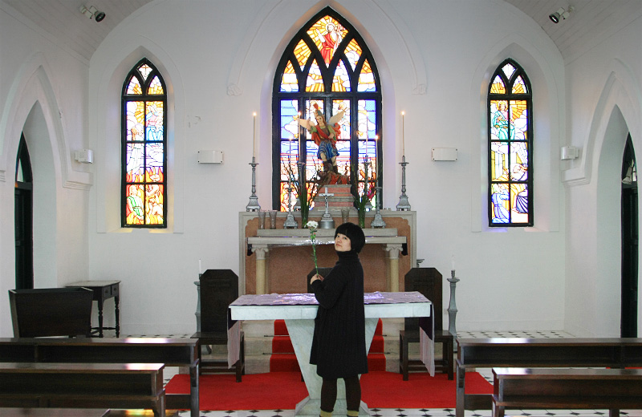

印象中的澳门除了灯红酒绿的赌场和美味蛋挞猪扒包，只剩下麦兜唱的“爸爸带我过大海吃葡国鸡”，所以此次澳门之旅期望并不高。当看到拱北口岸黑压压的排队人群，脑子里对“那么小的澳门如何能挤得下如此多人”场面的想像，更加大了我对此次旅行的担忧。但后来过关后才发现，这些人不在大三巴就在赌场，除此以外的澳门，人都很少，出乎意料的安静祥和。 这里跟行色匆匆的香港还是很不同，澳门人走路悠闲许多。在没有红绿灯的路口过街，车都会主动停下来让行人先过。我们习惯了在内地走路，从来不敢跟车抢时间，所以往往都犹豫不前，这时司机便会点头挥手示意我们先走。而在澳门城区里走，许多店铺也是晚晚才来开门，似乎在早开门多赚点钱的事情上不够努力。而在疯堂斜巷，我们还看到了一场名叫“黄昏小叙”的小朋友演奏会，大家从旁边店家里搬出来凳子，摆在人行道上便开始了，就是一个小社区的感觉。
著名的赌场也并非想象中的嘈杂模样，赌场里的服务员也不是火辣美女，大多是留着同样短发的中年阿姨，站在每个赌桌前，安静专业地完成着他们的工作。见你走过，就摊开手划过桌面，示意你入座。从进入赌场，到你开始赌博，都没有电影里任何激动的场面，平淡的就跟广州人去喝一次早茶一样。赌场里的确也有不少大叔大妈，我们看到一个玩百家乐的上海男人，几分钟赢了5万多，几秒后又全部输光，一切又都很平静。从赌场走回酒店，街上静悄悄的，却有一种暗流涌动的幻梦感，因为你知道马路边的豪华建筑里挤满了或冷静或冲动，或孤注一掷或举棋不定的人们，刷刷的筹码声此起彼伏，洗刷着多少一夜暴富的美梦。 夜灯下的澳门宁静安详，没有警车巡逻，只是零星的有行人和夜跑族经过，但似乎都很安全。这种反差让我想起那个有些反感的词：和谐。忽然想起澳门政府近些年都给市民分红，市民普大喜奔。而有一年香港政府效仿，就被香港人骂了。比较起来，澳门真是和谐社会。中式老房子和西式老建筑可以和谐共处；破旧的老城区跟豪华酒店赌场可以和谐共处；不同肤色的人可以和谐共处；内地人和澳门人也可以和谐共处，总听说香港人和内地人的矛盾，但从来没听说过澳门跟内地的矛盾，大概要得益于澳门的经济主要靠内地赌客支撑的关系。 后记：回来网上发现一则墙外旧闻——澳警开枪示警，撕开澳门和谐面纱，才意识到我们才两日的感受或许比较片面，也许在表面的和平底下，处处暗流，但这大概也只有常住在澳门的市民们才有真正深切的体会，和客观的发言权。